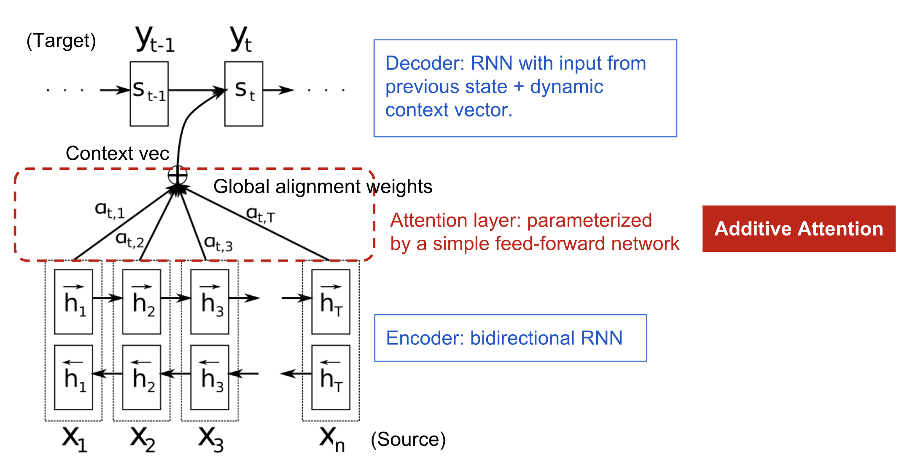
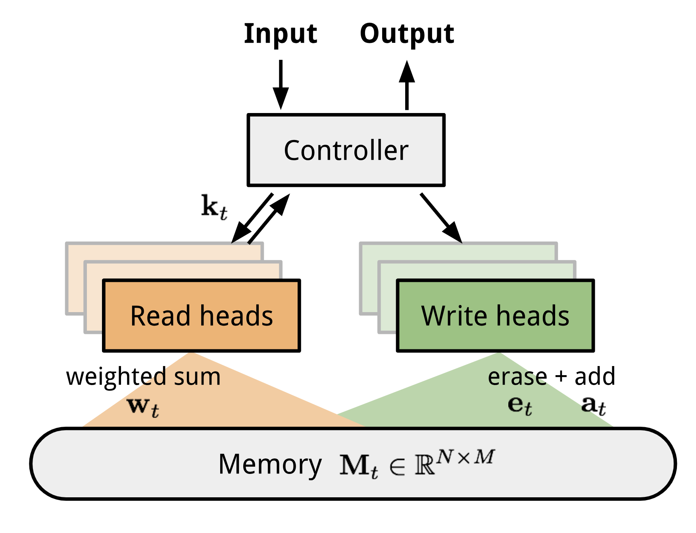
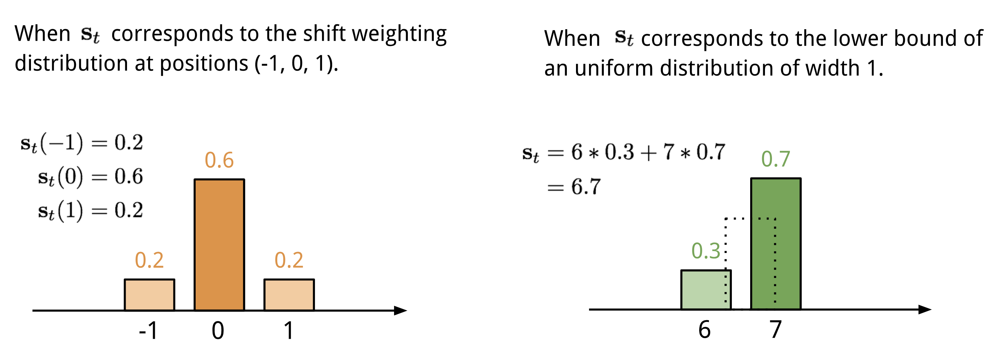
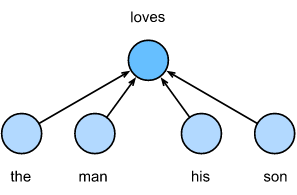

Procesamiento del Lenguaje Natural y Reconocimiento del Habla · Clase 05
4 - Transformers y Mecanismos de Atención
Contenido convertido sin ejecutar Python. Se conservan las salidas guardadas; las figuras matemáticas sustituidas y los gráficos de PE están identificados en el registro de revisión.
# Importación de libreríasimporttorchimporttorch.nnasnnimportmatplotlib.pyplotaspltimportnumpyasnpimportpandasaspdimportos,globimportlibrosaimportlibrosa.displayimportIPythonfromIPython.displayimportAudiofromIPython.displayimportImageimportwarningswarnings.filterwarnings('ignore')try:fromkiteconnectimportKiteConnectexceptImportError:!pipinstallkiteconnectfromkiteconnectimportKiteConnect
Código Python · celda 4
# matplotlib tiene algunos warnings con respecto al comportamiento de librosa.display, así que los ignoramos:importwarnings;warnings.filterwarnings('ignore')fromIPython.core.displayimportHTMLimportspeechpy# Centrar las figuras de matplotlibHTML("""<style>.output_png { display: table-cell; text-align: center; vertical-align: middle;}</style>""")
La atención neuronal calcula compatibilidades, normaliza puntuaciones y combina vectores de valor. Los pesos no son necesariamente correlaciones estadísticas ni constituyen una medición de la atención humana.
1.1 ¿Cómo surge los mecanísmos de atención en el Deep Learning?
Un encoder recurrente produce estados . Un seq2seq puede resumirlos en un contexto fijo c y factorizar . Comprimir la entrada en un único vector puede dificultar el uso de secuencias largas, sin hacerlas matemáticamente imposibles. La atención ofrece acceso a una secuencia de estados.
Dado que el modelo seq2seq tiene la restricción de utilizar un tamaño fijo para el vector de contexto , surge un impedimento para recordar oraciones largas. Por esta razón \cite{bahdanau2014neural}, propuso una nueva arquitectura que consiste en una RNN bidireccional como encoder y un decoder que emula la busqueda a través de la oración fuente durante la decodificación de una traducción.
A continuación, se muestra dicha arquitectura.

Figura tomada de [1].
1.2.1 Decoder
En Bahdanau, , y . El decoder usa ese contexto para actualizar su estado y predecir el token. La información se distribuye entre estados de la fuente; esto no demuestra una reducción del coste computacional total, pues se calculan alineaciones por paso.
El encoder implementa una RNN bidireccional (BiRNN), es decir, una RNN hacia adelante y otra hacia atrás . La RNN lee la secuencia de entrada en orden (desde hasta ) y calcula la secuencia de los estados ocultos hacia adelante . La RNN lee la secuencia en orden inverso (desde hasta ), resultando en una secuencia de estados ocultos hacia atrás .
Luego, se obtiene una anotación por cada palabra concatenando los estados ocultos y , es decir, . De esta manera, las anotaciones contienen el resumen de ambos (las palabras precedentes y las siguientes palabras).
Dado que las RNN tienden a representar mejor las entradas recientes (por el desvanecimiento del gradiente y falta de memoria), las anotaciones se concentrarán en las palabras alrededor de . Esta secuencia de anotaciones es usada por el decoder y luego por el modelo de alineamiento para calcular el vector de contexto.
1.3 Máquinas de Turing Neuronales (Neural Turing Machines - NTM)
Las máquinas de turing (Turing Machine - TM) son un modelo matemático similar a un autómata finito que dispone de una úncia cinta de longitud infinita en la que se puede leer y escribir datos. Permite representar lo que es capaz de hacer cualquier dispositivo físico de computación.
La entrada de una TM, viene determinada por el estado actual y el símbolo leído, un par (estado, símbolo), siendo el cambio de estado, la escritura de un nuevo símbolo y el movimiento del cabezal, las acciones a tomar en función de una entrada.
Dicho esto, una NTM \cite{graves2014neural} es un modelo de arquitectura para acoplar una red neuronal con almacenamiento en memoria externa (utiliza un proceso de atención para leer y escribir en la memoria de forma selectiva). La memoria imita la cinta de la TM y la red neuronal controla los cabezales de operación para leer o escribir en la cinta. Cabe destacar que una NTM es finita (ya que la TM es un modelo matemático teórico de cinta infinita).
A continuación, se muestra la arquitectura de una NTM.

Figura tomada de [1].
Como se muestra en la fig., una NTM tiene dos componentes principales: un controlador de red neuronal y un banco de memoria.
El controlador (cualquier tipo de red neuronal) será el encargado de interactuar con el mundo exterior mediante vectores de entrada y salida para ejecutar las operaciones en la memoria.
La memoria guardará la información procesada, es decir, es una matriz de tamaño que contiene vectores filas de .
En una iteración de actualización, el controlador procesa la entrada interactuándo con el banco de memoria para generar la salida (la salida de la red que parametriza estas operaciones se denomina "cabezales -heads-"). La interacción es manejada por un conjunto de heads de lectura y escritura paralelos. Ambas operaciones de lectura y escritura son "borrosas (blurry)",es decir, estas operaciones interactúan en mayor o menor grado con todos los elementos de la memoria (en lugar de dirigirse a un solo elemento, como en una TM). Por lo tanto, el grado de borrosidad está determinado por un mecanismo de "enfoque" de atención que restringe cada operación de lectura y escritura con una pequeña porción de memoria, mientras ignora el resto.
La ubicación de la memoria que se pone en el foco de atención, está determinada por salidas especializadas (definen una ponderación normalizada sobre las filas de la matriz de memoria denominadas "ubicaciones" de memoria) emitidas por los cabezales.
1.3.1 Lectura
Para la operación de lectura de una NTM, sea la memoria una matriz en el instante de tiempo , donde es el número de las ubicaciones de memoria, y es el tamaño del vector en cada ubicación. Sea el vector de pesos sobre las ubicaciones emitidas para una lectura del cabezal en el instante de tiempo , el cual controlará el grado de atención que se tiene que asignar a las diferentes ubicaciones de memoria (filas de la matriz). Sea también el vector de lectura (en el instante de tiempo ). Es decir, es una suma ponderada por la intensidad de la atención:
donde
y es el ésimo elemento en y es el ésimo vector fila en la memoria.
1.3.2 Escritura
Teniendo en cuenta las compuertas forget de las redes LSTM, la escritura en la memoria se descompone en dos partes: (1) borrado (earse) y (2) agregar (add).
Dada una ponderación producto de una escritura del cabezal en el instante de tiempo , junto con un vector de borrado (erase vector) cuyos elementos están en el rango de , los vectores de memoria del paso anterior se modifican como sigue:
donde es un vector fila de todos los unos, y la multiplicación contra la ubicación de la memoria actúa puntualmente. Por lo tanto, las reglas de actualización de la memoria son las siguientes:
Los elementos de una ubicación de memoria se restablecen a cero solo si, tanto la ponderación en el ubicación y el elemento a borrar son uno.
Si la ponderación o el borrado es cero, no se realiza ningún cambio.
Por otra parte, cuando hay varios cabezales de escritura, los borrados se pueden realizar en cualquier orden, ya que la multiplicación es conmutativa.
Luego, cada cabezal de escritura produce un vector de agregado (add vector) de tamaño , que se agrega a la memoria una vez realizado el paso de borrado:
Por último, la combinación de las operaciones de agregado y borrado de todos los cabezales de escritura produce el contenido final de la memoria del instante de tiempo .
1.3.3 Mecanismos de Atención
En una NTM, la generación de la distrubición de atención depende de los mecanismos de direccionamiento, es decir, una combinación de direccionamiento basado en contenido y basado en ubicación.
1.3.3.1 Direccionamiento Basado en Contenido (Content-based Addressing)
El direccionamiento basado en contenido, realiza un un foco de atención sobre las ubicaciones basadas en la similitud entre los valores actuales y los valores emitidos por el controlador. Es decir, para cada cabezal (lectura o escritura), primeramente se genera un vector clave (key vector) de tamaño que es comparado con cada vector por una medida de similitud .
El sistema basado en contenido produce una ponderización normalizada basada en la similitud y una medida de fuerza clave (key strength), , la cual puede amplicar o atenuar la precisión del foco (se calculan como similitud de coseno y luego se normalizan mediante la función de activación ):
1.3.3.2 Interpolación
Antes de aplicar el direccionamiento basado en ubicación (en particular el operador de rotación), cada cabezal genera una compuerta de interpolación escalar (interpolation gate) en el rango . El valor de es usado para realizar una combinación entre la ponderación producida por el cabezal en el intervalo de tiempo anterior y la ponderación producida por el sistema de contenido en el intervalo de tiempo actual, dando como resultado la ponderación cerrada :
Si la compuerta es cero, la ponderación del contenido es ingnorada por completo, y la ponderación del intervalo de tiempo anterior es usada. En cambio, si la compuerta es uno, la ponderación de la iteración anterior es ignorada, y el sistema aplica el direccionamiento basado en contenido.
1.3.3.3 Direccionamiento Basado en Ubicación (Location-based Addressing)
El direccionamiento basado en ubicación suma los valores en diferentes posiciones en el vector de atención, ponderados por una distribución de ponderación sobre los cambios enteros que se permitan. Por ejemplo, si la ponderación actual se centra completamente en una sola ubicación, una rotación de cambiaría el enfoque a la siguiente ubicación. Un cambio negativo movería la ponderación en la dirección opuesta.
La forma más simple de definir la ponderación de desplazamiento es utilizar una capa softmax de tamaño apropiado que estará junto al controlador. A continuación, se muestra dos formas de representar la ditribución de ponderación de desplazamiento .

Figura tomada de [1]
Con índices 0,…,N−1, el desplazamiento circular es . Después se realza con , para γ_t≥1. La suma debe ser no nula y la distribución inicial estar normalizada.
Self-attention relaciona posiciones de una misma secuencia; no es exclusiva de una arquitectura particular. LSTMN es la propuesta de Cheng, Dong y Lapata (2016), que amplía una LSTM con memoria y atención durante el procesamiento incremental.
No debe atribuirse LSTMN a Luong et al. (2015), cuyo trabajo estudia atención global y local en traducción recurrente. La self-attention del Transformer de Vaswani et al. (2017) utiliza proyecciones Q, K y V y no requiere una celda LSTM.
Arquitectura LSTMN - Figura tomada de \cite{cheng2016long}.
1.4.1 - Red de Memoria a Corto y a Largo Plazo (Long Short-Term Memory-Network - LSTMN)
LSTMN almacena estados ocultos h_i y celdas c_i. Para t>1 puntúa estados pasados con y normaliza sobre i<t. Las lecturas son y . Las compuertas usan la lectura oculta y la entrada actual; la actualización de celda combina . El primer paso requiere la inicialización definida por el modelo.
1.4.2 Fusión de Atención Profunda (Deep Attention Fusion)
Deep Attention Fusion combina una lectura de la memoria fuente con la memoria recurrente objetivo mediante una compuerta adicional. La atención entre fuente y objetivo es inter-atención; la consulta sobre el historial de la propia secuencia es intra-atención. Sus parámetros y ecuaciones deben seguir la arquitectura LSTMN del artículo.
Deep Attention Fusion - Figura tomada de \cite{cheng2016long}
1.5 Atención Global (Global Attention)
NMT significa traducción automática neuronal; NTM significa Neural Turing Machine. El modelo de traducción encoder–decoder con atención global de Luong es NMT y no requiere memoria externa NTM. Factoriza la probabilidad de salida en condicionales autoregresivos.
En Luong se puntúan el estado actual h_t del decoder y los estados fuente . Las variantes son dot: ; general: ; concat: . Dot requiere anchos iguales; las proyecciones permiten otros anchos. Se normaliza sobre posiciones fuente válidas. La variante location usa un vector de logits dependiente de h_t y tiene las restricciones de longitud indicadas en el artículo.
En cada paso del decoder se construye un contexto a partir de los estados del encoder. Los estados recurrentes se actualizan durante toda la secuencia, no solo al principio de una capa. La bidireccionalidad del encoder es una elección de arquitectura.
Dado que la atención global tiene que prestar atención a todas las palabras en el lado de la fuente para cada palabra objetivo, representa una tarea costosa para la traducción de documentos largos (párrafos, textos, etc) \cite{luong2015effective}.
Para solventar este problema, \cite{luong2015effective} propone la atención local que elige centrarse solo en un pequeño subconjunto de las posiciones de origen por palabra objetivo o destino.
1.6.1 Modelo Matemático
La atención local usa posiciones alrededor de un centro p_t, con hasta 2D+1 índices enteros para radio D entero. En local-m el centro es t; en local-p es . Luong atenúa la alineación con , con σ=D/2. El producto no suma necesariamente uno. Si se renormaliza, se obtiene una variante; calcular primero scores globales tampoco ahorra el coste de puntuarlos.
Figura tomada de [1]. Primeramente se predice sola posición de alineación para la palabra objetivo actual. Luego, una ventana centrada alrededor de la posición fuente es usada para calcular un vector de contexto , es decir, un promedio de ponderación de los estados ocultos fuente en la ventana. Por último, los pesos son inferidos del estado objetivo actual y los estados fuente en la ventana.
1.7 Atención Fuerte y Suave (Hard and Soft Attention )
La atención discreta de Xu muestrea una posición; la suave combina anotaciones con pesos continuos. Muestrear después de calcular todos los scores no evita ese cálculo. El muestreo requiere un estimador de gradiente o una relajación; seleccionar una sola posición no garantiza un ahorro global ni mejor rendimiento.
En captioning, una CNN codifica la imagen en L vectores de dimensión D asociados a regiones con campos receptivos. El decoder produce una secuencia de tokens del vocabulario. El encoder visual no genera por sí solo la descripción y se usan características convolucionales espaciales, no necesariamente la capa con menor tamaño.
Para el decoder se utiliza una red LSTM que produce una descripción generando una palabra en cada instante de tiempo condicionado por un vector de contexto, el estado oculto anterior y las palabras generadas previamente, es decir:
donde , , , , , son la entrada, compuerta de olvido, celda de memoria, compuerta de salida y estado oculto de una red LSTM respectivamente; , , y , son las matrices de pesos aprendidas y los términos de bias; es la matriz de incrustación (embedding matrix) donde y denotan el embedding y la dimensionalidad LSTM respectivamente y la función de activación sigmoide.
El vector de contexto es una representación dinámica de la parte relevante de la imagen de entrada en el instante de tiempo . Además, se define un mecanismo que calcula a partir de los vectores de anotación con correspondientes a las características extraídas en diferentes ubicaciones de la imagen.
Para cada ubicación , se genera un peso positivo interpretado como:
Probabilidad de que la ubicación sea el lugar correcto para hacer foco y producir la siguiente palabra -mecanismo de atención estocástico-; o
La importancia relativa que se le da la ubicación en mezclar las -mecanismo de atención determinista-.
El peso de cada vector de anotación es calculado por un modelo de atención para el cual se utilza un MLP condicionado sobre el estado oculto anterior ,
Una vez calculado los pesos (que en total suman uno), el vector de contexto se calcula como
donde es una función que retorna un solo vector el conjunto de vectores de anotaciones y sus correspondientes pesos.
Por último, el estado inicial de la memoria y el estado oculto de la LSTM son predecidos por el promedio de los vectores de anotaciones alimentados a través de dos MLP separados ( y ):
Para calcular la probabilidad de la palabra de salida, se utiliza una capa de salida profunda, donde sus entradas son: (1) el vector de contexto; (2) la palabra generada anteriormente y (3) el estado del decoder .
Sea la representación variable en donde el modelo decide centrar la atención al generar la ésima palabra, y sea un indicador de una variable en codificación la cual se establece en si la ésima ubicación (fuera de ) es la que se usa para extraer las características visuales. Al tratar las ubicaciones de atención como variables latentes intermedias, se puede asignar una distribución de Bernoulli generalizada (Multinoulli) parametrizada por y la variable aleatoria:
Sea la función objetivo el límite inferior variacional de probabilidad logarítmica marginal de las observaciones de la secuencia de palabras y de las características de la imagen dada
donde el algoritmo de aprendizaje para los parámetros de los modelos puede ser derivado mediante la optimización, es decir, a través de seguir el gradiente
Aproximando el gradiente de por el método de Monte Carlo se tiene que
donde es una secuencia de atención de muestra de ubicaciones y
Luego, la varianza se reduce aplicando la técnica de línea base de media móvil (moving average baseline technique). Dado el ésimo mini-lote (mini-batch), la línea base de la media móvil se estima como una suma acumulada de las probabilidades logarítmicas anterior con un decaimiento exponencial:
Luego, la regla de aprendizaje para el modelo queda como:
donde es el gradiente de la entropía de la distribución multinouilli, y son dos hiper parámetros establecidos mediante la validación cruzada.
La atención suave usa , la esperanza de la selección bajo una distribución categórica. Sin embargo, pasar esa esperanza por una red no lineal no equivale en general a promediar sus salidas. Las aproximaciones de Taylor y de media geométrica normalizada del artículo son aproximaciones, no identidades de esperanzas para cualquier LSTM.
La arquitectura de Transformers fue una de las que más impacto causó dentro del campo del NLP, propuesta por \cite{vaswani2017attention}, presentó muchas mejoras en los mecanísmos de atención suave y fue capaz de realizar el modelado seq2seq sin utilizar unidades de redes recurrentes. Los transformes están basado completamente en el mecanismo de self-attention sin usar arquitectura recurrentes de secuencias de alineación.
En self-attention se aprenden tres proyecciones: , y . No son necesariamente tres redes independientes: son transformaciones entrenadas conjuntamente.
La puntuación depende de normas y direcciones. Tras softmax, cada fila contiene pesos no negativos que suman uno. La salida combina valores de posiciones permitidas por la máscara. V no es por sí solo la traducción ni la predicción final.
# Load model and retrieve attentionmodel_version='bert-base-uncased'do_lower_case=Truemodel=BertModel.from_pretrained(model_version,output_attentions=True)tokenizer=BertTokenizer.from_pretrained(model_version,do_lower_case=do_lower_case)sentence_a="The cat sat on the mat"sentence_b="The cat lay on the rug"inputs=tokenizer.encode_plus(sentence_a,sentence_b,return_tensors='pt',add_special_tokens=True)token_type_ids=inputs['token_type_ids']input_ids=inputs['input_ids']attention=model(input_ids,token_type_ids=token_type_ids)[-1]input_id_list=input_ids[0].tolist()# Batch index 0tokens=tokenizer.convert_ids_to_tokens(input_id_list)
Código Python · celda 55
head_view(attention,tokens)
Layer:
Código Python · celda 56
model_type='bert'model_version='bert-base-uncased'do_lower_case=Truemodel=BertModel.from_pretrained(model_version)tokenizer=BertTokenizer.from_pretrained(model_version,do_lower_case=do_lower_case)sentence_a="The cat sat on the mat"sentence_b="The cat lay on the rug"show(model,model_type,tokenizer,sentence_a,sentence_b,layer=2,head=0)
Layer: Head: Attention:
2.1.2 Auto Atención Multi Cabezal (Multi-Head Self-Attention)
La atención escalada calcula
En self-attention, Q, K y V se proyectan desde la misma secuencia de entrada. En cross-attention del decoder, Q procede del decoder, mientras K y V se proyectan desde la salida del encoder. No hay que confundir estos dos casos.
Para consultas y claves, las puntuaciones tienen forma y la salida . La atención multicabezal concatena salidas y aplica una proyección final aprendida.
Dado que originalmente se utilizan matrices en el cálculo de la auto-atención, primeramente se muestra cómo funciona el mecanismo de auto-atención usando solo vectores. Cabe destacar que esta operación requiere de seis pasos que se describen a continuación \cite{alammar2018illustrated,vaswani2017attention,weng2018attention}:
2.1.2.1.1 Creación de los vectores Query (), Key () y Value ()
Cada cabeza calcula activaciones Q, K y V a partir de matrices aprendidas. En el Transformer base se eligieron 8 cabezas de ancho 64 para un modelo de ancho 512. Es una configuración concreta, no un coste constante independiente de longitud ni una dimensión obligatoria.
Figura tomada de \cite{alammar2018illustrated}. Vectores generados para la frase: "Thinking Machines."
2.1.2.1.2 Cálculo de la Puntuación (Score)
Para una consulta q_i y una clave k_j, el producto punto es . El índice j recorre tokens y r recorre coordenadas; no deben confundirse con d_k, que es el ancho de la clave.
Figura tomada de \cite{alammar2018illustrated}. Cálculo de las puntuaciones para las dos palabras de la frase: "Thinking Machines."
2.1.2.1.3 Estabilización de los Gradientes y Normalización de las Puntuaciones
Se dividen los productos punto por . Si sus componentes tienen varianza uno y cumplen las hipótesis de independencia apropiadas, el producto tiene varianza d_k; el escalado controla esa magnitud y ayuda a evitar saturación del softmax. No garantiza por sí solo estabilidad de todos los gradientes.
Figura tomada de \cite{alammar2018illustrated}. Cálculo de las puntuaciones para las dos palabras de la frase: "Thinking Machines."
2.1.2.1.4 Vector Valor (Value - )
El quinto paso consiste en multiplicar cada vector por la puntuación , es decir, lo que se quiere lograr es mantener "intactos" los valores de las palabras en las que queremos prestar atención y atenuar la atención en las palabras que sean irrelevantes (multiplicando por un número real pequeño, por ej., ).
Como sexto paso, se realiza una suma ponderada de los vectores . Esto produce la salida de la capa de auto-atención en una posición determinada, en este caso, para la primera palabra.
Finalmente, como resultado se obtiene un vector el cual se puede enviar a lo largo de la red neuronal feed-forward. Dado que es un cálculo computcionalmente costoso, esta operación se realiza a través de matrices. En las siguientes secciones se detalla dicha operación.
Figura tomada de \cite{alammar2018illustrated}. Cálculo de la suma ponderada de las puntuaciones softmax y los vectores de la frase: "Thinking Machines."
2.1.2.1.5 Cálculo Matricial de la Auto-Atención
El primer paso es calcular las matrices Query (), Key () y Value () para poder empaquetar los embeddings en una matriz para luego multiplicarlas por las matrices de pesos que se entrenaron: , y respectivamente. A continuación se muestra gráficamente dichas operaciones.
Figura tomada de \cite{alammar2018illustrated}. Cada fila en la matriz se corresponde a una palabra en la oración de entrada. Podemos ver la diferencia de las dimensiones del vector de embedding, (dimensionalidad de la entrada y de la salida) y las dimensiones de las matrices: , y donde .
Finalmente, podemos resumir los pasos descriptos anteriormente (del paso dos al paso seis) de la siguiente manera:
A continuación se muestra dicha operación gráficiamente.
Figura tomada de \cite{alammar2018illustrated}. Cálculo de la auto-atención en forma matricial.
2.1.2.2 Auto-Atención Multi-Cabezal en Detalle
Al incorporar múltiples cabezales, el rendimiento de la capa de atención se ve mejorada en los siguientes puntos:
Expande la habilidad del modelo para centrarse o prestar atención en diferentes posiciones.
La capa de atención tendrá múltiples "subespaciones de representación". Es decir, con la atención multi-cabezal tendremos múltiples conjuntos de matrices de ponderación: , y siendo las matrices de query, key y value respectivamente. Las matrices de pesos aprendidas estarán dadas por: , y donde .
El Transfomer utilizará ocho cabezales de atención, por lo que se tiene ocho conjuntos para cada decoder/encoder. Cada uno de los conjuntos de matrices de ponderación, se inicializa aleatoriamente. Luego, después del entrenamiento, cada conjunto se utiliza para proyectar los embeddings de entrada (vectores de decoders/encoders inferiores) en una representación diferente de subespacio. Gráficamente, se tiene lo siguiente:
Figura tomada de \cite{alammar2018illustrated}. Con la atención múltiple, se mantienen por separado los pesos de las matrices , y para cada cabezal, lo que da como resultado diferentes matrices , y . Como se explicó anteriormente, se multiplica por las matrices , y para producir las matrices de pesos aprendidas , y .
Si realizamos el mismo cálculo de la auto-atención que se describió anteriormente, es decir, ocho veces con diferentes matrices de pesos, obtendremos ocho matrices diferentes. Graficamente:
Figura tomada de \cite{alammar2018illustrated}.
Dado que la capa feed-forward no está esperando recibir como entrada ocho matrices, sino que sólo espera recibir una matriz (un vector por cada palabra), se realiza una concatenación de las matrices mutlplicándolas por una matriz de peso adiconal (que fue entrenada conjuntamente con el modelo). Por lo tanto, el resultado debería ser una matriz que contiene información de todos los cabezales de atención para luegos enviarlo a la red FFNN. Matemáticamente se tiene que:
Gráficamente:
Figura tomada de \cite{alammar2018illustrated}. Concatenación de las matrices.
Figura tomada de \cite{alammar2018illustrated}. Cálculo de la auto-atención multi-cabezal.
2.2 Encoder
Viendo la arquitectura Transformers como una caja negra, vemos que la entrada es procesada por una serie de encoders cuya salida será la entrada para los decoders y estos generarán la salida según la tarea que se esté realizando (dentro del contexto del NLP). A continuación, se muestra gráficamente la caja negra para los Transfomers en el contexto de traducción de texto.
Figura tomada de \cite{alammar2018illustrated}. Caja negra de la arquitectura transformers.
El encoder es una pila de encoders (se utilizan seis encoders situados inmediatamente uno arriba del otro -según el artículo original, se pueden experimentar con otros arreglos-). El decoder es una pila de decoders (seis decoders).
Figura tomada de \cite{alammar2018illustrated}. Pila de encoders y decoders.
Los encoders tienen todos una misma estructura, cada uno de ellos se divide en dos subcapas: (1) capa de auto-atención (descripta anteriormente) y (2) una FFNN (Feed Forward Neural Network).
Las salidas de la capa de auto-atención son enviadas a la FFNN (aplicada independientemente para cada posición de las palabras).
Figura tomada de \cite{alammar2018illustrated}. Subcapas por cada encoder.
2.2.1 Codificación one-hot (One-Hot Encoding)
La codificación one-hot es un veector que tiene tantos componentes como categorias se tenga. El componente correspondiente a la categoría de la instancia particular se establece en y todos los demás componentes se establecen en . Supongamos que tenemos tres clases: . La etiqueta sería un vector tridimensional con: , y correspondientes a las clases , , respectivamente, es decir:
Supongamos que ahora queremos utilizar la codificación one-hot sobre palabras. Sea el número de palabras diferentes en el diccionario (el tamño del diccionario) , y cada palabra se corresponde a un entero diferente (índice) desde hasta . Para obtener la representación del vector one-hot para cualquier palabra con el índice , se crea un vector de ceros de tamaño y establecemos el elemento en la posición en . De esta manera, cada palabra es representada como un vector de tamaño y esto puede ser usado por una red neuronal.
La principal desventaja de los vectores one-hot es que no pueden expresar con precisión la similitud entre diferentes palabras, como la similitud de coseno que se utiliza a menudo (usando el producto escalar). Para los vectores , su similitud de coseno es el coseno del ángulo entre:
Dado que la similitud de coseno entre los vectores one-hot de dos palabras diferentes es , los vectores one-hot no pueden codificar similitudes entre palabras.
2.2.2 Word-Embedding (word2vec)
Los embeddings densos son representaciones aprendidas. Bag of words cuenta ocurrencias en un documento y no es lo mismo que un one-hot por token. Word2Vec aprende regularidades de contexto; no garantiza que toda pareja cercana en texto termine cercana en el espacio ni que resuelva comprensión semántica por sí sola.
El modelo skip-gram \cite{zhang2021dive} asume que una palabra puede ser usada para generar las palabras que la rodean en una secuencia de texto. Sea la secuencia de texto: "the","man","loves","his","son". Sea la palabra central "loves" y establecemos el tamaño de la ventana de contexto en . Dicho esto, el modelo skip-gram considera la probabilidad condicional para generar las palabras de contexto:
Se asume que el contexto de las palabras son independientementes generadas dada la palabra central (es decir, independencia condicional). En este caso, podemos rescribir la probabilidad condicional como
En este modelo, cada palabra tiene dos representaciones de vectores dimensionales para calcular probabilidades condicionales. Formalmente, para cualquier palabra con índice en el diccionario, sean sus dos vectores cuando se utilicen como palabra central y palabra de contexto respectivamente. La probabilidad condicional de generar cualquier palabra de contexto (con índice en el diccionario) dada la palabra central (con índice en el diccionario) puede ser modelada por una operación sobre los productos escalares de estos dos vectores, es decir:
donde se establece el índice del vocabulario . Sea una secuencia de texto de tamaño , donde la palabra en el instante de tiempo se denota como . Supongamos que las palabras de contexto se generar de forma independiente dada cualquier palabra central. Para el tamaño de ventana de contexto , la función de verosimilitud del modelo skip-gram es la probabilidad de generar todas las palabras de contexto dad cualquier palabra central:
donde cualquier paso del tiempo que es menor que o mayor que puede ser omitido.
2.2.2.1.1 Entrenamiento
Los parámetros del modelo skip-gram son el vector de palabra central y el vector de palabra de contexto para cada palabra del vocabulario. Durante el entrenamiento, se aprenden los parámetros del modelo maximizando la función de verosimilitud (es decir, la estimación máxima de verosimilitud). Esto es equivalente a minimizar la siguiente función de pérdida:
Cuando usamos el descenso del gradiente estocástico (sthochastic gradient descent - sgd) para minimizar la función de pérdida, en cada iteración podemos muestrear aleatoriamente una subsecuencia más pequeña para calcular el gradiente (estocástico) para dichas subsecuencias para actualizar el modelo de parámetros. Para calcular el gradiente (estocástico), se necesita obtener los gradientes de la probabilidad condicional logarítmica con respecto al vector de palabra central y al vector de palabra de contexto. En general, teniendo en cuenta la ec. del modelo skip-gram (probabilidad condicional de la función softmax), la probabilidad logarítmica condicional para cualquier para (palabra central) y (palabra de contexto) es
A través de las diferenciaciones, podemos obtener sus gradientes con respecto al vector de palabra central como
Este cálculo requiere las probabilidades condicionales de todas las palabras en el diccionario siendo como palabra central. Los gradientes de los otros vectores de palabras pueden ser obtenidos de la misma manera.
Luego del entrenamiento, para cualquier palabra con índice en el diccionario, podemos obtener los vectores (palabra central) y (palabra de contexto).
2.2.2.2 The Continuous Bag of Words (CBOW)
El modelo CBOW es similar al modelo skip-gram, con la diferencia en que CBOW asume que la palabra central se genera en función de las palabras de contexto que la rodean en la secuencia de texto. Por ej., para la misma secuencia de texto (analizada en la sección anterior), el modelo CBOW considera la probabilidad condicional de generar la palabra central "loves" basada en las palabras de contexto "the", "man", "his" y "son", es decir

Figura tomada de \cite{zhang2021dive}.
Ya que existen múltiples palabras de contexto en el modelo CBOW, estos vectores de palabra de contexto son ponderados en el cálculo de la probabilidad condicional.
Formalmente, para cualquier palabra con índice en el diccionario sean sus dos vectores cuando se utilicen como palabra de contexto y palabra central respectivamente (notar que los significados para los vectores se cambian a diferencia del modelo skip-gram). La probabilidad condicional de generar cualquier palabra central (con el índice en el diccionario) dadas las palabras centrales que la rodean (con índices en el diccionario) puede ser modelado como
Sea y . Entonces, la ec. anterior se simplifica como
Dada una secuencia de texto de tamaño , donde la palabra en el instante de tiempo es denotada por . Para una venta de contexto de tamaño , la función de verosimilitud del modelo CBOW es la probabilidad de generar todas las palabras centradas dadas sus palabras de contexto:
2.2.2.2.1 Entrenamiento
Para el entrenamiento del modelo CBOW, la estimación de verosimilitud máxima es equivalente a minimizar la siguiente función de pérdida (entropía cruzada):
Notar que
A través de las diferenciación, podemos obtener el grandite con respecto a cualquier vector de palabras de contexto como
Los gradientes para los otros vectores de palabras se pueden obtener de la misma manera. A diferencia del modelo skip-gran, el modelo CBOW normalmente utiliza vectores de palabras de contexto como representaciones de palabras.
2.2.3 Word-Embedding en el Decoder
En el caso del NLP, cada palabra de entrada estará dada por un vector usando los algoritmos de embedding previamente descritos.
Figura tomada de \cite{alammar2018illustrated}. Cada palabra está representada por un vector de embedding de tamaño .
El encoder y el decoder tienen embeddings en su entrada. Las capas siguientes reciben representaciones contextuales. El batch puede usar padding y máscaras con longitud variable dentro del contexto soportado; no tiene que fijarse a la oración más larga del corpus completo.
Figura tomada de \cite{alammar2018illustrated}. Subcapas por cada encoder.
Aquí se puede observar la clave de la arquitectura transformer, cada palabra en cada posición fluye a través de su propio camino en el encoder, pero existen dependencias entre estos caminos en la capa de auto-atención. Sin embargo, la capa de FFNN no tiene estas dependencias y, por lo tanto, los diferentes caminos se pueden ejecutar en paralelo mietrnas fluyen a través de la capa FFNN.
Figura tomada de \cite{alammar2018illustrated}. Salida del encoder que será la entrada del siguiente encoder en la pila de encoders de la arquitectura. La palabra en cada posición pasa a través del proceso de auto-atención. Luego, cada una de ellas pasa a través de una FFNN -la misma capa FFNN se ejecuta de manera independiente con cada vector que fluye a través de ella.
La codificación posicional aporta información de orden a la atención. Puede ser aprendida o fija, aditiva o aplicada mediante otros mecanismos. No garantiza crear distancias semánticas significativas entre vectores.
Figura tomada de \cite{alammar2018illustrated}. Para el orden de las palabras, se añaden vectores de codificación posicional a los vectores de embedding de entrada (cuyos valores siguen un patrón específico).
Supongamos que la representación de la entrada es que contiene embeddings dimensionales para tokens de una secuencia. La codificación posicional de las salidas genera usando una matriz de embedding posicional de la misma dimensión, cuyo elemento en la fila ésima y en la columna o es
En la matriz , las filas se corresponden a la posición dentro de una secuencia y las columnas representan diferentes dimensiones de codificación posicional.
2.2.4.1 Información posicional Absoluta
Las frecuencias de los pares sinusoidales disminuyen con el índice de dimensión. Son valores continuos evaluados en posiciones enteras, no un contador binario. La eficiencia en memoria depende de la representación y precisión elegidas, no se deduce simplemente de que sean números flotantes.
Para una frecuencia ω y un desplazamiento δ, el par (sin(iω),cos(iω)) se transforma en (sin((i+δ)ω),cos((i+δ)ω)) mediante una matriz 2×2 independiente de i:
Esta identidad facilita representar desplazamientos; no garantiza que cualquier modelo aprenda a usarlos ni extrapole bien.
En cada subcapa de los encoder de la pila (auto-atención y FFNN), cada encoder tiene una conexión residual a su alrededor, y es seguida por un paso de normalización de capa.
Figura tomada de \cite{alammar2018illustrated}.
Figura tomada de \cite{alammar2018illustrated}.
2.3 Decoder
El decoder tiene una estructura similar a la del encoder. Las capas de auto-atención y FFNN están presentes, pero en el medio tiene una capa de atención que ayudar al decoder a enfocarse en las partes relevantes de la oración de entrada (similar a lo que hace la atención en los modelos seq2seq).
El encoder comienza por procesar la secuencia de entrada. La salida del encoder superior se transforma luego en un conjunto de vectores de atención y . Estos serán utilizados por cada decoder en su capa de "atención del encoder-decoder" que ayuda al decodificador a enfocarse en los lugares apropiados en la secuencia de entrada:
Cada paso de la fase del decoder genera un elemento de la secuencia de salida (en este caso, la traducción al inglés de una frase en francés). Los pasos repiten el proceso hasta que se alcanza un símbolo especial que indica que el decoder del transformer ha completado su salida. La salida en cada paso se envía al decoder inferior en el siguiente paso de tiempo, y los decoders aumentan sus resultados de decodificación al igual que lo hicieron los encoders. Al igual que las entradas para los encoders, se realiza el embedding y la codificación posicional para las entradas de los decoders para indicar la posición de cada palabra.
La self-attention causal permite atender a la posición actual y a posiciones anteriores; bloquea las futuras antes del softmax. La cross-attention usa consultas del decoder y claves/valores del encoder. Durante entrenamiento, teacher forcing y la máscara permiten calcular muchas posiciones a la vez; durante generación autorregresiva se incorporan tokens sucesivamente.
La capa lineal produce logits sobre el vocabulario de salida y softmax los convierte en probabilidades por token. Greedy decoding escoge el máximo; muestreo y beam search son alternativas. El vocabulario puede contener subpalabras. Softmax no produce log-probabilidades: para ello se usa log-softmax.